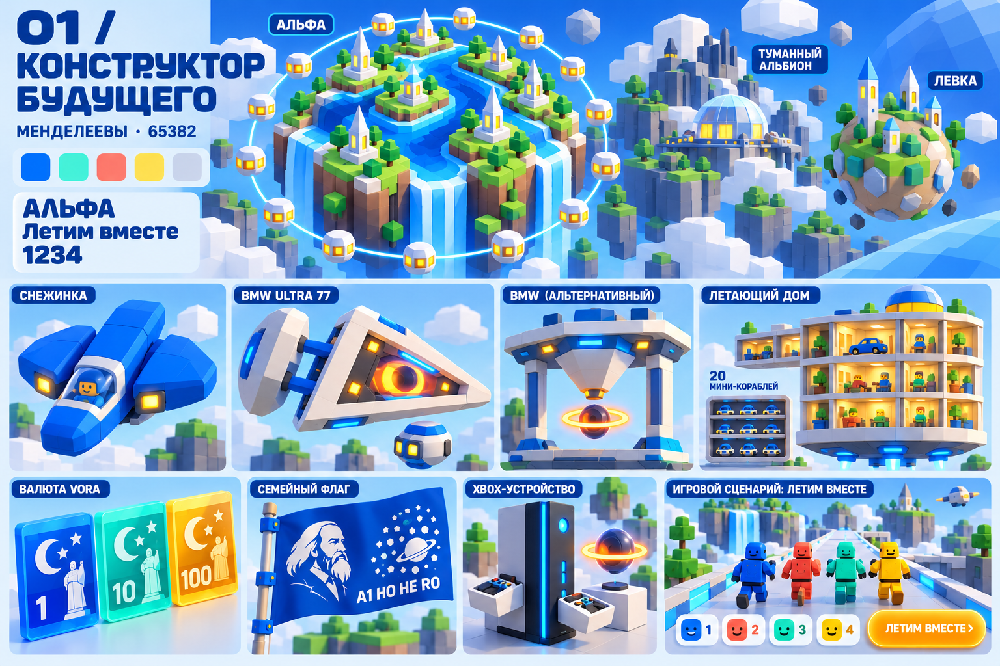
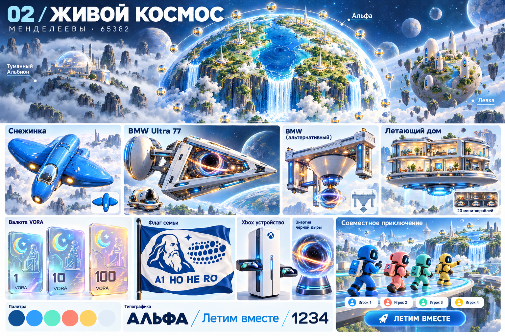
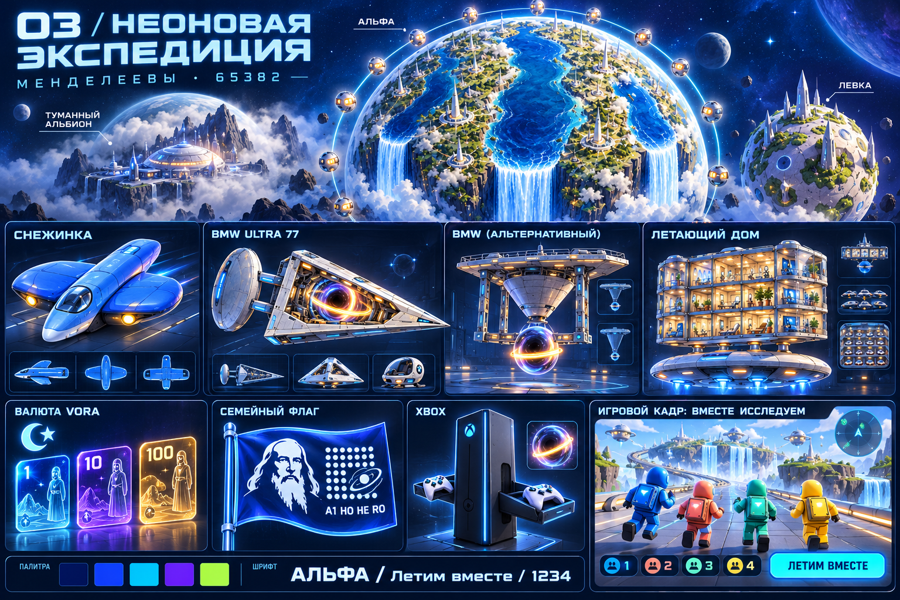
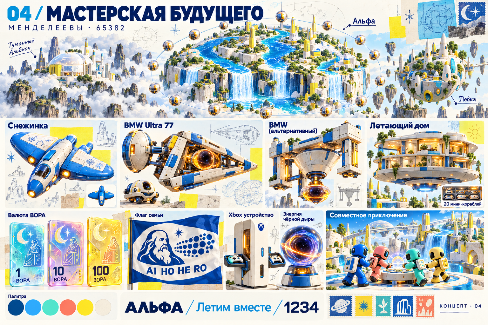

← Вернуться в атлас65382 год · четыре варианта, чтобы выбрать
Как выглядит наше будущее?
Те же корабли и планеты — четыре разных характера. В каждом варианте есть Альфа, Туманный Альбион, новая Левка, транспорт, ВОРА, флаг и эскиз игры для четырёх игроков.
Это концепты. Картинки игровых экранов пока не являются работающей игрой.
После Frieze предлагаю сравнить 02 и 04.
02 — воздушный и гладкий; 04 — тактильный, с рисунками семьи и яркой архитектурой. Простую геометрию персонажей можно взять из 01.
Вариант 01
Конструктор будущего
Крупные модульные формы и яркие цвета. Самый близкий к Roblox: мир похож на конструктор, в который сразу хочется играть.
Шрифт-кандидат: Rubik. ВОРА — цветные чипы, флаг — простой графический знак. Риск: любимые корабли становятся заметно проще.

Нажмите на изображение, чтобы рассмотреть крупнее. Левка показана справа в верхней части доски.
Вариант 02
Живой космос
Светлая керамика, прозрачные материалы, вода и зелень. Сохраняет больше деталей ваших кораблей и показывает красивое далёкое будущее.
Шрифт-кандидат: Golos Text. ВОРА — светящиеся прозрачные карты, флаг — силуэт Менделеева. Для самой игры предложил бы упростить персонажей и мелкие детали.

Нажмите на изображение, чтобы рассмотреть крупнее. Левка показана справа в верхней части доски.
Вариант 03
Неоновая экспедиция
Тёмный космос, сияющие края, цифровые панели. Самый аркадный и энергичный вариант.
Шрифты-кандидаты: Exo 2 для заголовков и Golos Text для текста. ВОРА — голографические карты. Свечение стоит дозировать, чтобы игровые объекты оставались хорошо различимы.

Нажмите на изображение, чтобы рассмотреть крупнее. Левка показана справа в верхней части доски.
Вариант 04 · после Frieze London
Мастерская будущего
Светлая керамика, янтарные энергетические окна, лимонные акценты и следы рисунков рукой. Мир, который семья собирает и придумывает вместе.
Сохраняем силуэты кораблей. Коллаж и штампы — на ВОРЕ и коллекционных карточках; игровые экраны оставляем понятными. Шрифты-кандидаты: Rubik и Golos Text.

Референсы → наши идеи
Что нашли на Frieze
В присланных работах есть четыре полезных направления. Ниже — наша интерпретация для семейного мира.
- Shinro Ohtake — Retina/Yellow RAM 2. Коллаж → собственные семейные рисунки и штампы путешествий на ВОРЕ и в журнале. Источник
- Agata Ingarden — Wall Hermit 1. Фактура вокруг светящегося окна → энергетические модули и Xbox.
- Pablo Bronstein — The Fountain of the Setting Sun. Цветная архитектура и тонкая линия → города Альфы и Левки. Подписи работ в путеводителе
- Theo Triantafyllidis — Feral Metaverse (Spider). Совместная виртуальная среда → общий пульт и задачи, которые решаем вместе. О проекте
Новая идея для Альфы: «Настроим водопад». От одного до четырёх игроков направляют три потока, поворачивая мостики и линзы. В одиночку инструменты переключаются, в команде распределяются. Это предложение, ещё не правило мира.